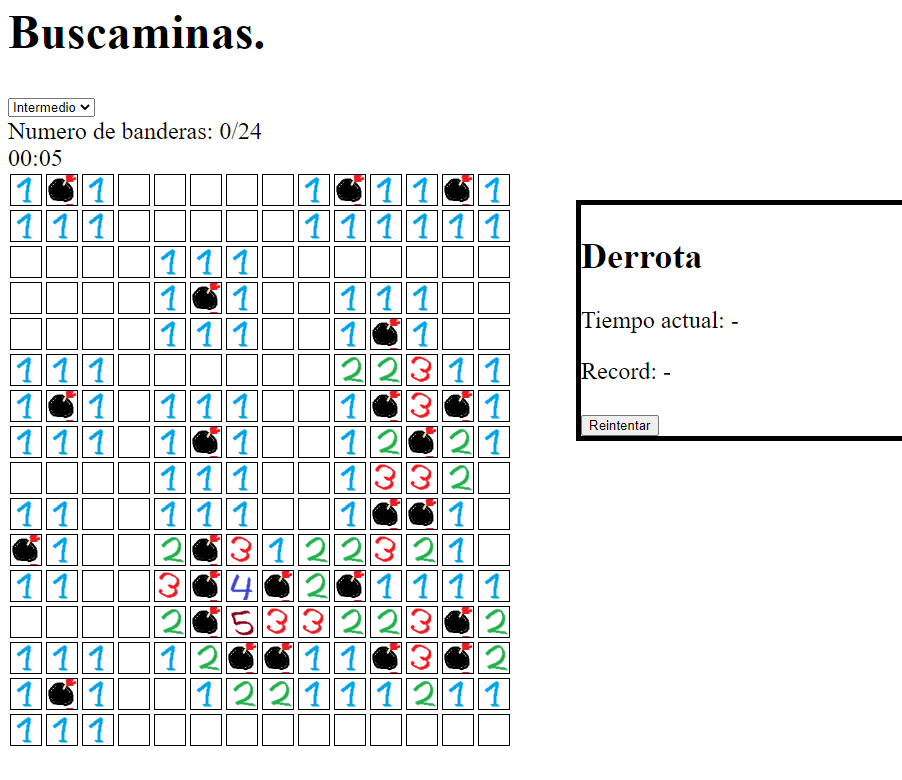
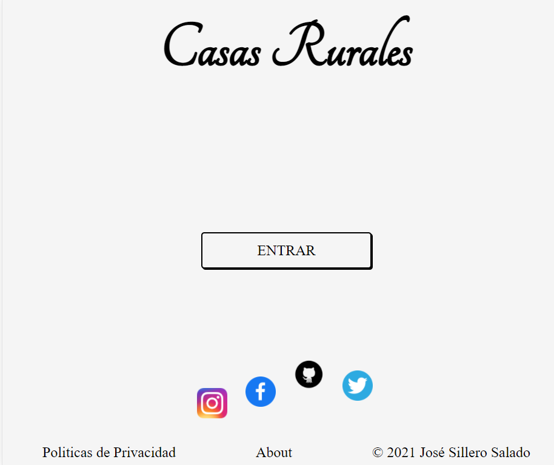
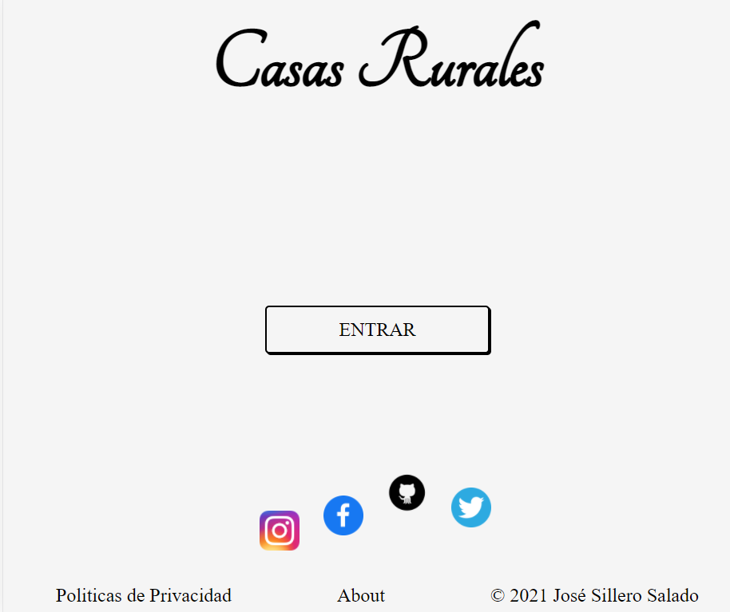
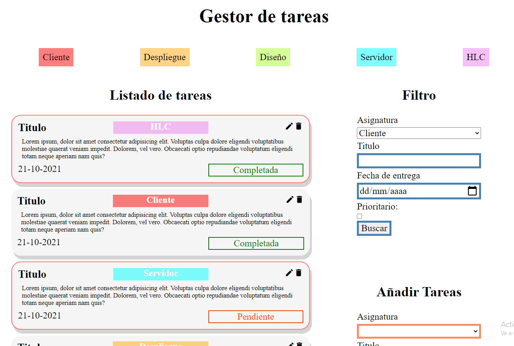

Sobre mí
¿Quién soy?
Soy alguien que disfruta analizando problemas y solucionándolos esto no solo se aplica a puzles o creación de código; por ejemplo yo veo la cocina como un problema de optimización de varios aspectos: sabor, comodidad, nutrición y tiempo.
Aparte de eso soy una persona que valora el empirismo y la comunicación sobre todo, y aunque entender se me de mejor que explicar hay tiempo de sobra en la vida para mejorar.

Habilidades
Código
Experiencia desarrollando en una diversidad de lenguajes, y metodologías ágiles. Analizar problemas y darles una solución es algo que me llena de satisfacción; por ello desarrollar código es algo que me resulta natural y hasta agradable, y no solo desarrollarlo, sino hacer tests, mejorarlo y depurarlo.
Inglés
Ya sea leer documentación, escribir comentarios, hablar con compañeros en el extranjero o incluso con clientes mi certificación de C2 Proficiency garantiza el mejor nivel. De hecho todo la vista en ingles ha sido escrita por mí.


Diseño
Toda la potencia del css moderno añadido a la flexibilidad y adaptabilidad de javascript posibilitan páginas de carga rápida, esto añadido a un diseño explicito y agradable que ayuda a la retención de usuario estos dos factores son la diferencia entre el éxito y el fracaso.


Proyectos (clica las imágenes)
Buscaminas
Aplicación de lado de cliente, empleando todas las herramientas otorgadas por js nativo. Uno de los códigos en el que más tiempo he pasado, y más he cambiado, con el que se nota la importancia de la organización del código, la nomenclatura y los comentarios. La parte visual es chapucera, pero este no era un proyecto centrado en eso.
Casas rurales
Combinación de tres paginas para una hipotética web de casas rurales. Aunque no tuviese total libertad a la hora de diseñar e implementar la pagina web pues había unas directrices a seguir, el proposito era practicar el "mobile first" y el diseño responsive en un cotexto más profesional.
 

Todo List
El primer proyecto de diseño en el que pasé a hacer algo que no me avergüenza enseñar. Algo que me gustaría revisitar para añadir funcionalidad completa y solucionar los problemas que tiene en ciertas resoluciones.
